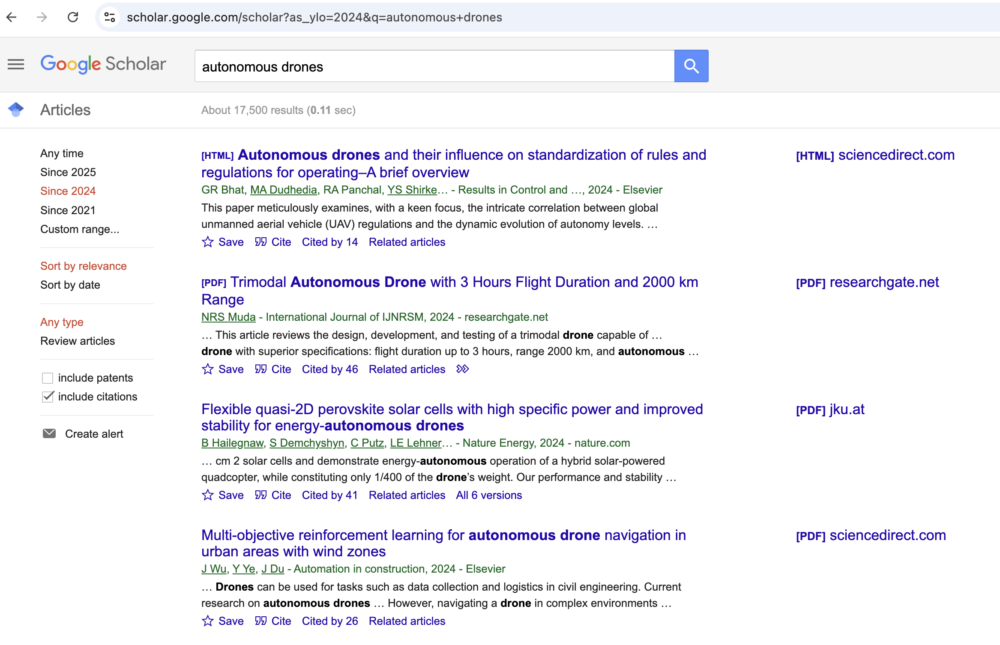
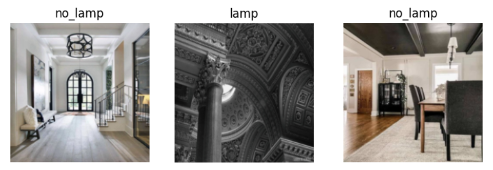
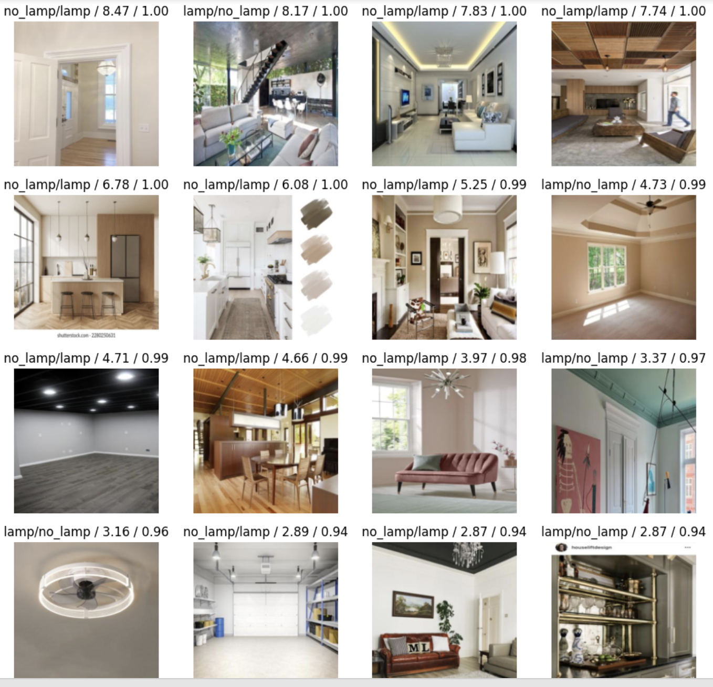

Fly a drone with: Image classification
2025-05-15
- Learn how to build a simple image classifier to help a drone detect obstacles (like lamps) using fast.ai.
- See the real-world challenges of collecting and cleaning training data for image classification.
- Discover the impact of label noise, data imbalance, and augmentation on model performance.
- Get practical tips on improving results: manual data cleaning, trying different resizing/augmentation, tuning batch size, and testing better base models.
- Understand the importance of reproducibility and the limits of small datasets.
- Follow a step-by-step, experiment-driven approach—ideal for beginners like myself wanting to apply machine learning to robotics.
Series: Code, Fly & AI
The path to autonomous flying
Now that we have the Tello / RoboMaster TT under control with a mobile app, a keyboard, and a game controller we can make the first steps to remove control all together.
I’m sure there have been written many books about this subject and there is loads of scientific research:

Over 17k results since 2024; OMG! Good thing that LLM’s have read all that :)
I’m not going to do anything with it for now, let’s just try out a couple of naive ideas and see were we end up.
Naive approach #1: Image classification
No, of course image classification is not the solution to autonomous flying, but probably it is in there somewhere, and I am following the Fast.ai course which starts off with image classification.
Jeremy Howard is the man behind both the Fast.ai library and the course, and his approach is to create a simple baseline model first:
Baseline: A simple model which you are confident should perform reasonably well. It should be very simple to implement, and very easy to test, so that you can then test each of your improved ideas, and make sure they are always better than your baseline. Without starting with a sensible baseline, it is very difficult to know whether your super-fancy models are actually any good.
So, that’s what I am going to do: fine-tune an image classifier with a limited amount of data and with a simple base model.
The testing ground for my drone has a couple of very obvious obstacles: lamps handing from the ceiling. So this is going to be a lamp or no-lamp in the room image classifier.
Lamp or no-lamp image classifier 😞 → 😐 → 🙂 → 😊 → 😃 → 😁
First attempt 😞
My first attempt can be seen here: Baseline model: Is there a lamp?.
Not a great result (understatement), it over-fits from the start, and the reason is obvious: label noise (jargon for have data labelled wrong).
Here are some wonderful samples from the training set:

It is a bit hard to Google/DDG for interior without hanging lamps, so let’s try training the model another time after manual cleanup.
Cleanup of the image labels
I said manual cleanup, but I’m going to cheat and use some advanced AI model (CLIP) to be able to train a very simple model.
Code is written by chatgpt: Lamp Dataset Cleaner (CLIP-based).
And the result is…. MEH! Not much better than what I started with.
So, back to manual cleaning. I’ll be back soon…
One hour later: DONE!
The result is a huge amount of images with a lamp, and very few without it. Reason being: if you use ceiling in a search term, lamps will show up very often. The query home interior wall -lamp was quite a bit better, not as many lamps! :)
More manual cleaning to do…
Another hour later: DONE!
Second attempt 😐
With the cleaned up data I did another run, see: Baseline model: Is there a lamp? Second attempt.
The result I quite a bit better with a ~10% error rate, but there still is over-fitting starting at epoch 2. The 16 top losses look like this:

To be fair, some of these images are pretty tough to classify IMO. Anyway, let’s see if we can do better.
Third attempt 😐: Better resizing and Augmentation
There’s a couple of things we can try, here is what I did try:
Resizing with different methods:
* item_tfms=[Resize(400, ResizeMethod.Pad, pad_mode='zeros')]
* item_tfms=[Resize(400, ResizeMethod.Squish)]
* item_tfms=[Resize(400)]
* item_tfms=[RandomResizedCrop(400, min_scale=0.6)]
* item_tfms=[RandomResizedCrop(400, min_scale=0.3)]
* item_tfms=[RandomResizedCrop(400, min_scale=0.8)]Augmentation:
* item_tfms=[Resize(400, ResizeMethod.Pad, pad_mode='zeros')],
* batch_tfms=aug_transforms()The runs can be seen here: Baseline model: Is there a lamp? Third attempt.
Something very annoying is that subsequent runs - without changing anything - have different results, which makes doing experiments impossible. I asked Gemini about it and it said:
You’ve done a good job providing a seed for reproducibility with seed_everything(42). However, even with careful seeding, variations in results can sometimes occur in deep learning training for a few reasons, especially within an environment like Colab:
GPU Non-Determinism: While you’ve set torch.backends.cudnn.deterministic = True, not all operations on the GPU are guaranteed to be completely deterministic across different runs or hardware configurations. Some highly optimized kernels might involve non-deterministic algorithms for performance reasons.
Background Processes in Colab: Colab is a shared environment. While unlikely to cause significant variations, very minor background processes or resource allocation differences could theoretically have a minuscule impact on timing and execution flow, though this is generally not the primary cause of noticeable differences.
Hmm, not great. What is great, is that Gemini can see the notebook you are working with, so it can be very helpful when needed. Not this time though :)
Conclusion: nothing really helps. The error rate stays around 10%.
Probably we got everything out of the data we have? Let’s try a couple more things.
Fourth attempt 🙂: smaller batch size
So far we had a mini-batch size of 32. Let’s have look what happens when we decrease that:
- No more over-fitting with 3 epochs.
- Error-rate goes down to 6-8%!
Maybe I am over-fitting with my hyper-parameters? It feels a bit like it, but I don’t have a test set to confirm that… Let’s try that later, when we have a bit more data.
Here is the notebook: Baseline model: Is there a lamp? Fourth attempt.
I think we have a good baseline here. So let’s go and throw some more power behind it:
- Use a better base model
- Use more training data
Fifth attempt 😊: use a better base model
I tried a larger resnet model: resnet34, which (with a smaller mini-batch size of 8) resulted in a 4% error rate, without over-fitting for the first few epochs.
I also had a look here: Which image models are best?, and picked convnext_tiny. This model resulted in a 3% error rate, but is significantly slower. Because we want speedy inference later on, we might want to stick with the resnet models.
Notebook for this experiment: Is there a lamp? Fifth attempt. I removed the phrase Baseline model, because we are now starting to ramp up the actual base model. Not sure if this is the way, but so far it seems to work. Still a bit worried about the test set that is coming up though…
Sixth attempt 🤨: collect more data
My plan was to now collect more data and do some of the previous steps again, but I changed my mind. The possibility that I am over-fitting by trying different hyper-parameters and picking the winners is substantial.
The logical next step would then be to use a test set and see what is going on.
Also: I don’t need to create the best lamp classifier in the world, we are here to learn!
What’s next?
As said, in the next post I will create a test set (from drone frames), figure out test-set best practices, and finalize our classifier. Read on…